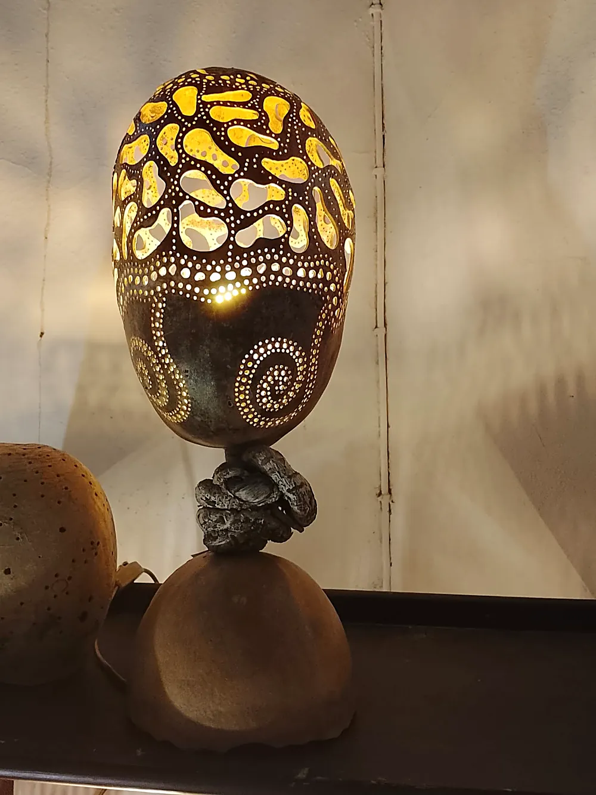
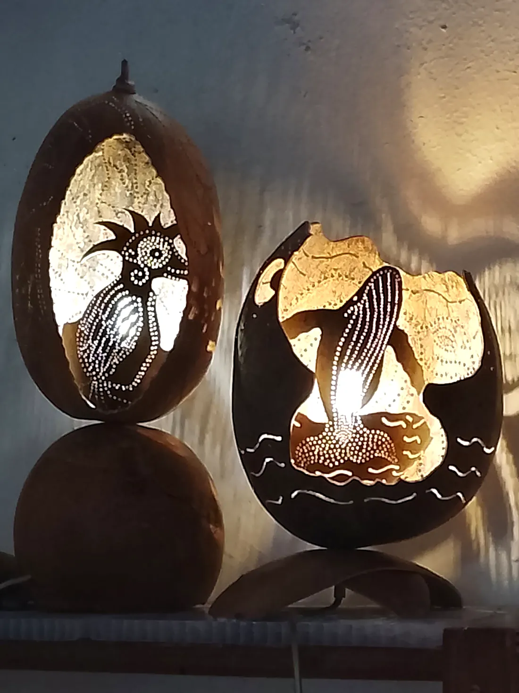
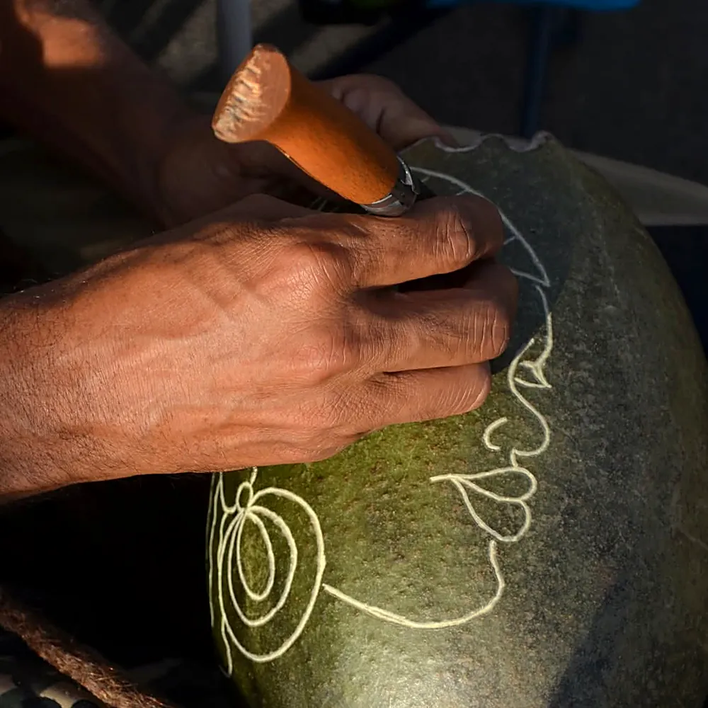
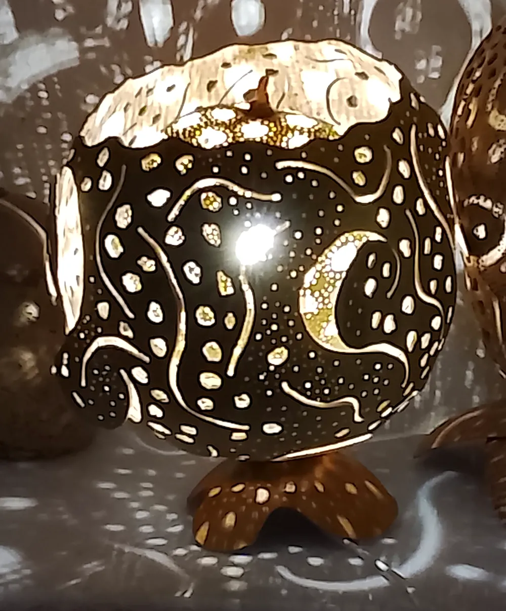
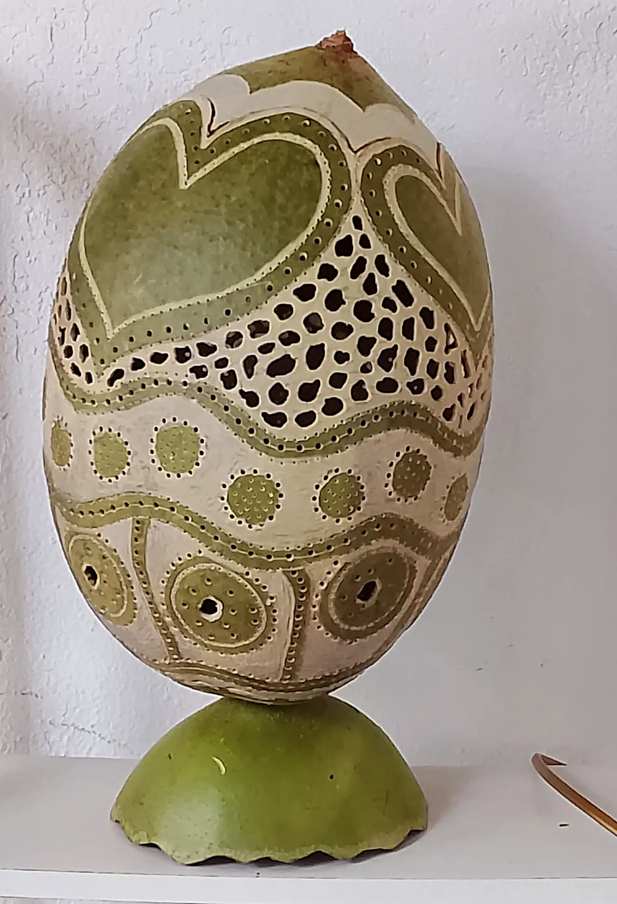
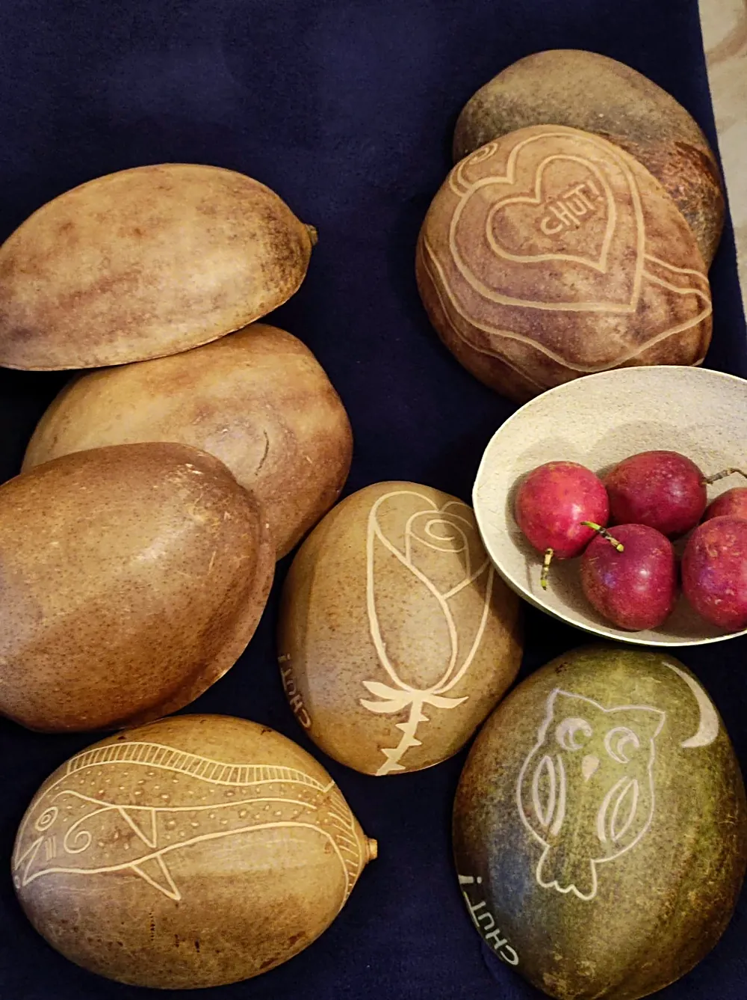
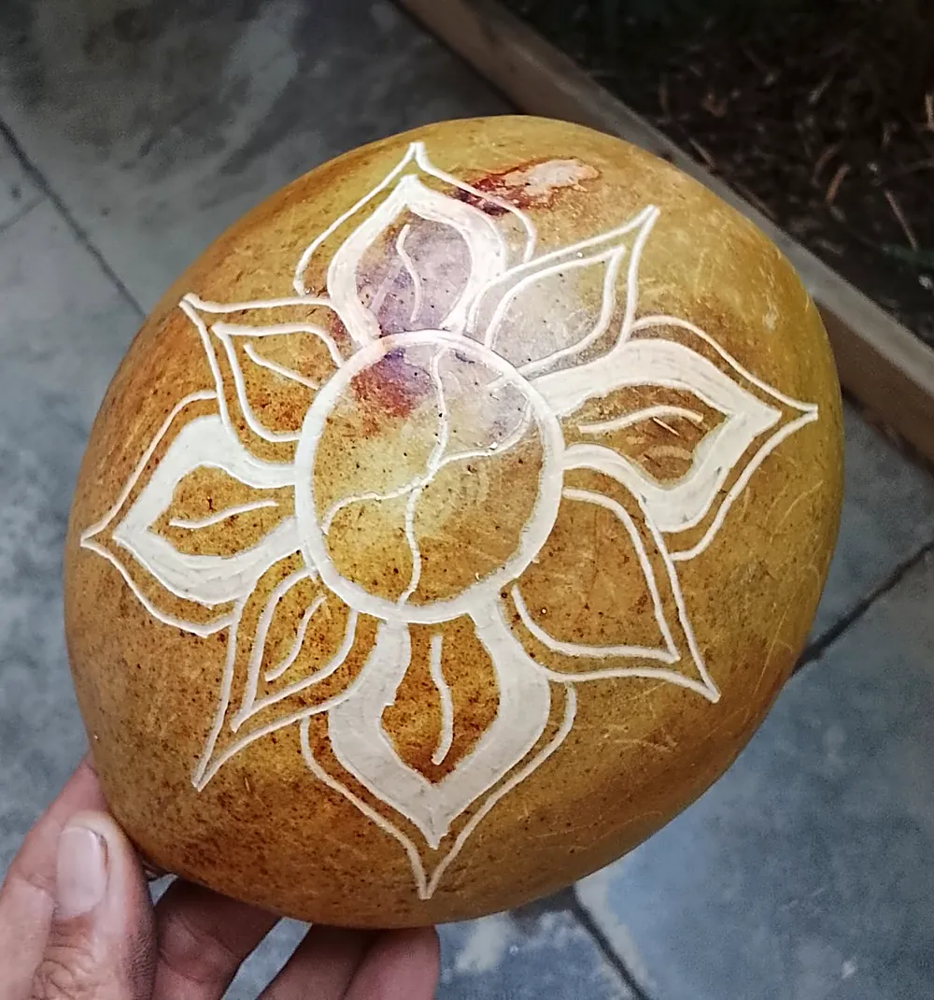
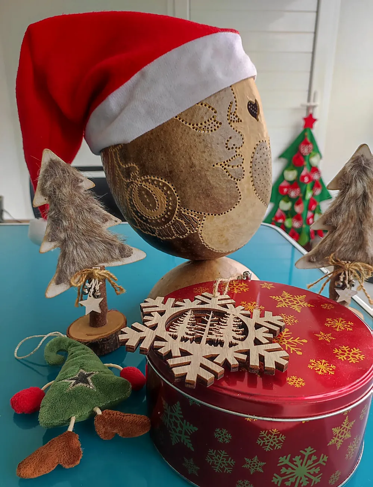

Spirales
Une lampe sur pied, ajourée en haut, spirales de lumière en bas.
Artisanat calebasse · Île de la Réunion
« Éleveur de luminaires en calebasse »Marque distinctive de l'artisanat réunionnais
Luminaires, abat-jours, assiettes, paniers et bijoux en graines naturelles, sculptés à la main dans l'atelier-boutique du Marché Couvert de Saint-Paul.


L'atelier
Chut ! et alors fait vivre un savoir-faire réunionnais : la calebasse, fruit de la famille des Bignoniacées, devient sous le couteau une lampe, un abat-jour, une applique, un sac, un pot de fleurs ou un ustensile de cuisine. Chaque pièce est unique.
« Un cadeau artisanal 💯 % péï »
Marque distinctive de l'artisanat réunionnais
Reçue en 2026 : « un pas de plus pour le travail de Chut ! et alors ».
Créations
Perforées point par point, les calebasses laissent passer la lumière et projettent leurs motifs tout autour : spirales, cœurs, lunes, baleine…

Une lampe sur pied, ajourée en haut, spirales de lumière en bas.

Volutes et lune ajourées : la pièce entière devient un ciel étoilé.

La calebasse garde sa couleur, gravée de cœurs, de vagues et de points.
Deux scènes découpées dans la calebasse, éclairées de l'intérieur.
← faites glisser →
Le moment magique
Un clic, et la lumière se met à danser.
Gravures
Des calebasses gravées de motifs tout simples, avec la petite signature « Chut ! » glissée sur le côté.


Bijoux
À côté des calebasses, l'atelier propose des bijoux réalisés à partir de graines naturelles de La Réunion. Des pièces légères, aux couleurs de l'île, à découvrir sur place au Marché Couvert.
Atelier créatif
Chut ! et alors organise des ateliers créatifs pour les enfants et les adolescent·e·s à partir de 8 ans, pour découvrir la calebasse et le plaisir de créer de ses mains.
Me retrouver
Horaires de l'atelier hors jours de salons et de marchés. Commandes possibles.

Offrir pour Noël
Pour faire plaisir, ou se faire plaisir, avec un cadeau artisanal unique, sculpté ici à Saint-Paul.
Contact